Рис. 7. Просмотр типов партиций,
относящихся к RAID. Установка типа разделов в Linux raid
autodetect
Создание массива RAID 1
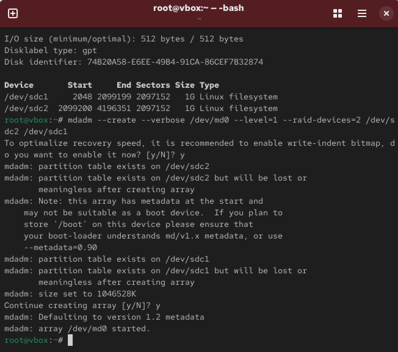
Рис. 8. Создание массива RAID 1 из двух
дисков
Проверка состояния массива (cat /proc/mdstat)
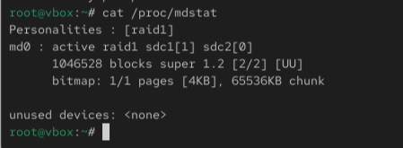
Рис. 9. Проверка состояния массива с
помощью cat /proc/mdstat
Проверка состояния массива (mdadm –query)
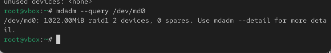
Рис. 10. Проверка состояния массива с
помощью mdadm –query /dev/md0
Проверка состояния массива (mdadm –detail)
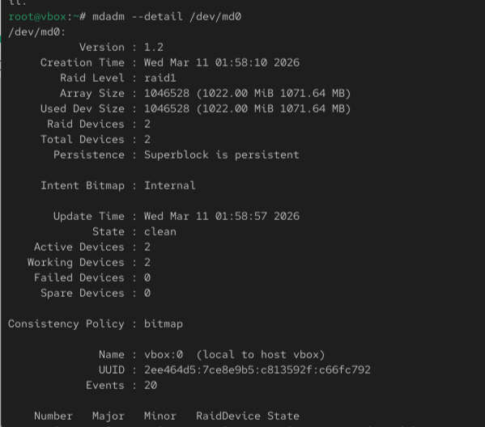
Рис. 11. Проверка состояния массива с
помощью mdadm –detail /dev/md0
Создание файловой системы на RAID
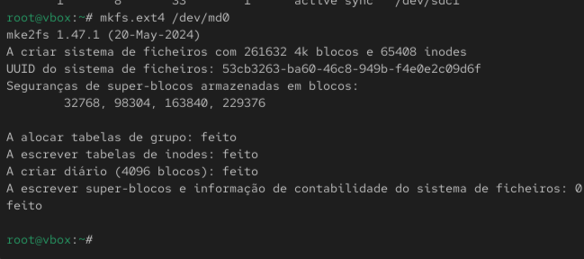
Рис. 12. Создание файловой системы на
RAID-массиве
Подмонтирование RAID
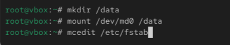
Рис. 13. Подмонтирование RAID, открытие
файла /etc/fstab в текстовом редакторе mcedit
Добавление записи для автомонтирования
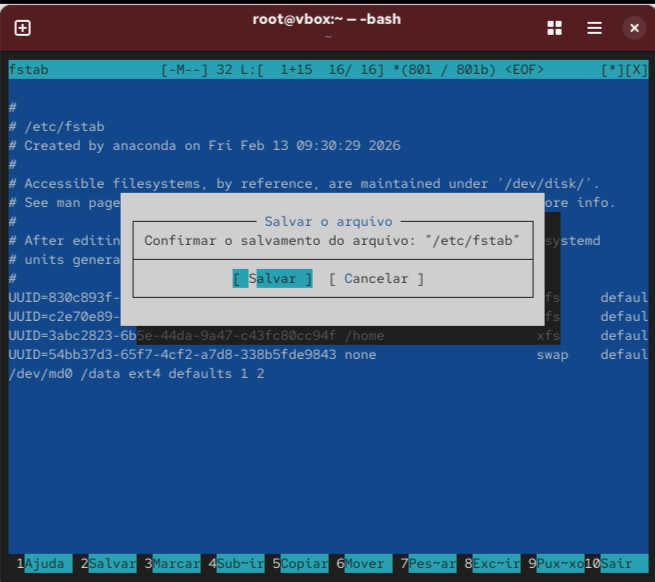
Рис. 14. Добавление записи для
автомонтирования в файл /etc/fstab
Имитация сбоя диска
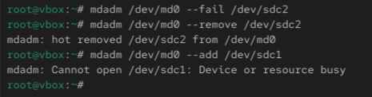
Рис. 15. Имитация сбоя одного из дисков,
удаление сбойного диска, замена диска в массиве
Просмотр состояния после сбоя
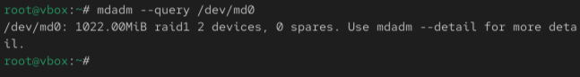
Рис. 16. Просмотр состояния массива после
сбоя (mdadm –query /dev/md0)
Детальный просмотр после восстановления
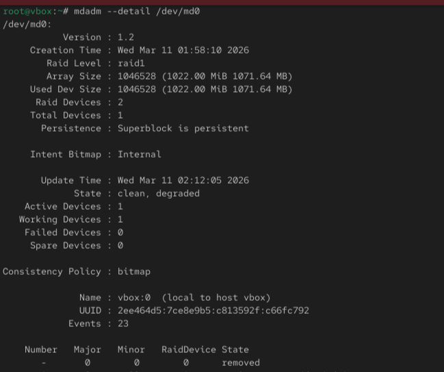
Рис. 17. Просмотр состояния массива после
восстановления (mdadm –detail /dev/md0)
Удаление массива и очистка метаданных
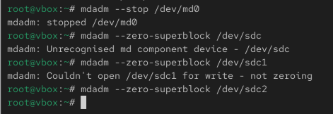
Рис. 18. Удаление массива и очистка
метаданных
Создание RAID с горячим резервом
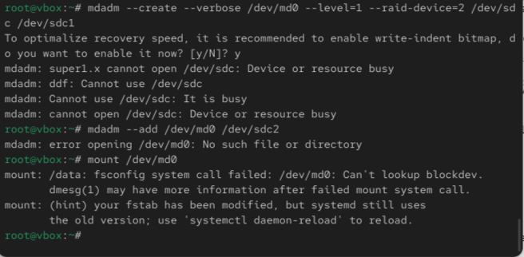
Рис. 19. Создание массива RAID 1 из двух
дисков, добавление третьего диска как горячего резерва (hotspare),
подмонтирование /dev/md0
Проверка состояния с горячим резервом
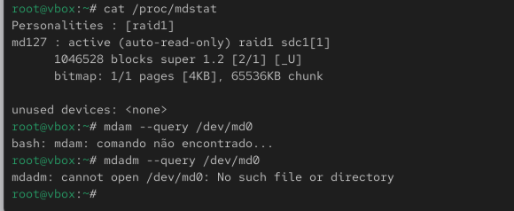
Рис. 20. Проверка состояния массива с
горячим резервом (cat /proc/mdstat и mdadm –detail
/dev/md0)
Итоговая проверка RAID
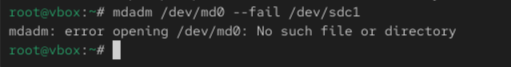
Рис. 21. Итоговая проверка работы
RAID-массива
Вывод
В ходе выполнения лабораторной работы были освоены методы работы с
программными RAID-массивами в Linux с использованием утилиты mdadm.
Получены практические навыки создания RAID 1, имитации сбоев дисков,
восстановления массива, работы с горячим резервом (hotspare), а также
настройки автоматического монтирования RAID-массивов.
Список литературы
[1] Linux man pages: mdadm(8), md(4), /proc/mdstat